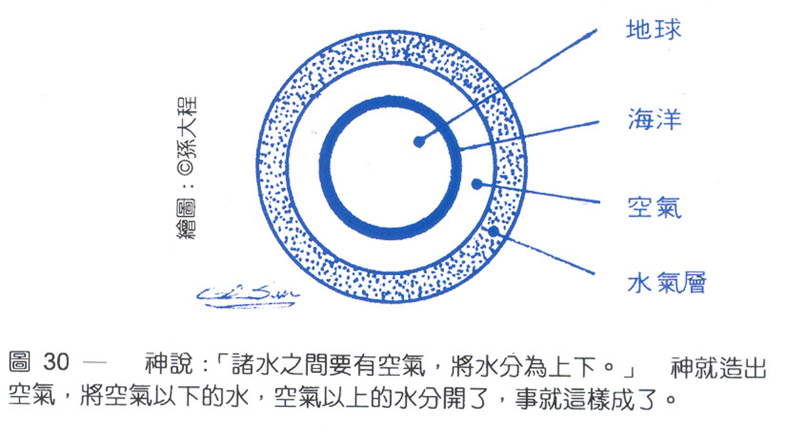
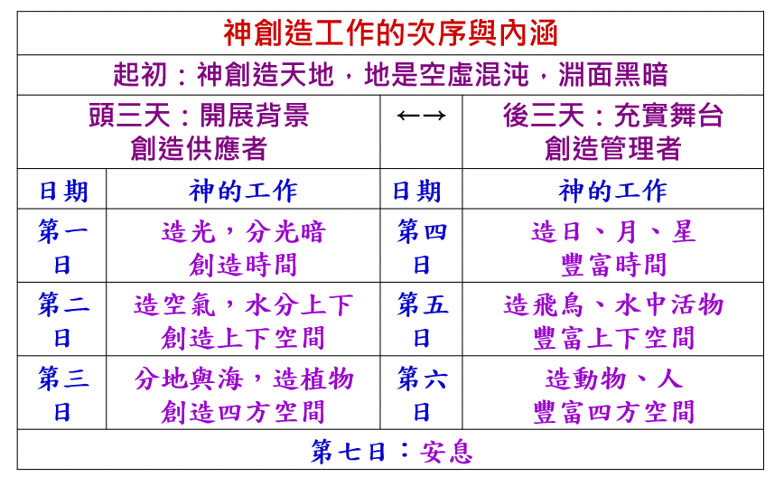
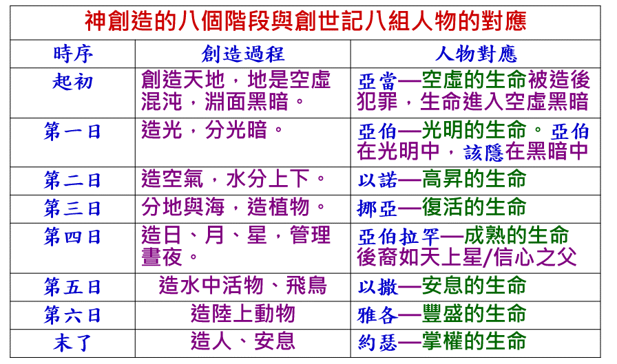

題目：神的創造
經文：創一章1-13節
小組討論題目：
- 創造者與被造者各有何特色？這事對我的人生觀有何影響？
- 「創造」的神蹟本質有哪些？「創造」所啟示的意義是甚麼？與今天的我們有何關係？
- 神的創造工作有何次序與內涵？我藉此可學習甚麼功課？
- 中國字裡關於神與創造的字，還有獻祭時吟唱之詞，對你有何啟發？如何藉此傳福音？
PPT 內容
前言：創世記是整部聖經的「種籽書」，聖經中所有重要主題都發源於本書，須了解本書才能正確理解其他經卷。而創世記一章又是整部創世記的根源，許多屬靈真理及原則就在這章聖經裡，因此今天分享創世記一章。洪水後挪亞將創世記一至九章的內容傳給閃，再從閃傳給中華民族的祖先，所以中國字、古經及獻祭見證了聖經的真理。本篇信息講聖經中神的創造，也介紹華人文化信仰內涵，藉此看見古代華人對上帝的認識與聖經是一致的。
壹、創造者與受造者
一、創造者—聖父、聖子、聖靈三位一體神
聖父：創一 1起初，神創造天地。
聖子：創一 3神說，要有光，就有了光。( 約一 1太初有道，…… 3萬物是藉著他造的；凡被造的，沒有一樣不是藉著他造的。)
聖靈：創一 2……神的靈運行在水面上。(創一26 神說，我們要照著我們的形像、按著我們的樣式造人，)
二、受造者—天、地與其中的萬物、生命，有開始，也有結束或更換。
來一 10主啊，你起初立了地的根基；天也是你手所造的。11天地都要滅沒，你卻要長存。12天地都要像衣服漸漸舊了；你要將天地捲起來，像一件外衣，天地就都改變了。惟有你永不改變；你的年數沒有窮盡。
啟廿一 1我又看見一個新天新地；因為先前的天地已經過去了，海也不再有了。
貳、「創造」的本質與意義
一、「創造」的神蹟本質
1.創造包含時間：神造成熟的人～亞當。
變水為酒：葡萄種子→葡萄酒
2.創造包含智慧：各從其類，智慧設計
3.創造包含能力：質能守恆，E＝MC2
羅馬書一 20 神的永能和神性明明可知。
4.創造留下證據：五餅二魚→十二籃，
林後五 17 在基督裡成為新造的人。
二、「創造」所啟示的基本意義
1.宇宙是經由神的創造而開始的，並因神的維持而繼續存在。
2.天地和其中一切皆為上帝所有，物質與心靈皆不應輕視。
3.必須劃分創造者與受造者的絕對差別。我們可以管裡、使用受造物，但不能崇拜之，乃要崇拜造物主，並順從祂。
貳、創造的時序與類別
一、起初：
1.神創造天地～諸天與地。
創造 bara：創一1,21,27; 伯卅八4,7:立大地根基時，神的眾子歡呼。
2.地是空虛混沌，淵面黑暗。
是 hayah—be，become
賽卅四11……耶和華必將空虛的準繩，混沌的線鉈，拉在其上。
耶四23先知說：我觀看地，不料，地是空虛混沌；我觀看天，天也無光。
3.神的靈運行在水面上。
世人生命的光景
弗四17-18所以我說，且在主裡確實的說，你們行事不要再像外邦人存虛妄的心行事。 他們心地昏昧，與神所賜的生命隔絕了，都因自己無知，心裡剛硬。
世人生命的改變
約三5耶穌說：我實實在在的告訴你，人若不是從水和聖靈生的，就不能進神的國。
—聖靈的工作與代禱的工作
二、第一日：造光，將光暗分開，分晝與夜。
神看光是好的。
光是生命之源，光預表基督 (約一4~5,12)
約一4: 生命在他裡頭，這生命就是人的光。
詩三十5:一宿雖然有哭泣，早晨便必歡呼。
有晚上、有早晨～時間 (光陰) 的起點。
分晝夜是在有限的時間內 (啟廿一23,廿二5)
三、第二日：造空氣 (空間)，將水分為上下，
分天與地 (有水的地)。
空氣與水是生命的動力。
人體的循環主要靠空氣與水。
空氣與水預表聖靈：
禱告是屬靈的呼吸
聖靈是屬靈的活水(約七38~39)
天上的水是全地球的保護與調節，也是人犯罪後的審判工具。 (創七11)

四、第三日：聚水露旱地，分旱地與海。神看著是好的。
彼後三5:他們故意忘記，從太古，憑神的命有了天，並從水而出、藉水而成的地。
造植物，各從其類。神看著是好的。
植物的生命是供應的生命 (創一29~30)
申十一14：我必按時降秋雨春雨在你們的地上，使你們可以收藏五穀、新酒，和油。
五穀—麥子等（約十二24~25）
新酒—葡萄（約十五1~2,16）
油—橄欖（出廿七20，羅十一24）
五、第四日：造光體，作記號、定年歲節令，
管裡晝夜，分別明暗。神看著是好的。
六、第五日：造水中動物，各從其類。
造空中飛鳥，各從其類。
神看著是好的。神賜福這一切滋生繁多。
七、第六日：造陸上動物，各從其類 。
神看著是好的。
照神的形像造男造女。神賜福他們—生養眾多，遍滿地面、治理這地，管理活物。
菜蔬、果子給人作食物，青草給其他活物。
神看著一切所造的都甚好。
八、第七日：神歇了一切創造的工，安息。
神賜福給第七日，定為聖日。
神造男造女之後的第一天，就是安息日：
(1)先安息，後工作。
(2)這是時間的奉獻。
神為何用六日進行造物之工，而不是六小時或六分鐘？為了給人作榜樣。
出二十11: 因為六日之內，耶和華造天、地、海，和其中的萬物，第七日便安息，所以耶和華賜福與安息日，定為聖日。


肆、中國字～關於神與創造的字
一、示：光照、啟示；眾光 之源、啟示者。
《辭海》：「示，神祇也。」
造字意義：「示」字的上半原只有一橫，表示「天」；後來有二橫，為古代「上」字，表「天上」。三直劃，表天上的光照射下來。
「示」是代表「上帝」的部首：「示」部的字，都與上帝相關。例如：禮—事神致福也。禛—以真受福也。祐—神助也。祥—獻羊得平安也。這些都是吉福之事，其源頭來自上帝。
二、神：由「示」「申」所組成。《說文解字》：「神，天神，引出萬物者也。」
《易經、說卦》：「神也者，妙萬物而為言者也。徐灝箋：天地生萬物，物有主之者曰神。」
《說苑修文篇》：「神者，天地之本，而為萬物之始也，故曰天神引出萬物。」
三、元：象形及會意字，「一」與「人」，表天上第一人，首先者上帝。正如上帝說：「我是阿拉法。」基督說：「我是首先的。」（啟一8，17）
四、天：象形及會意字，「二」與「人」組成，表天上之人～有位格 (知情意) 之天父。
《說文》：「天，至高無上。」
五、帝：《說文》：「帝，王天下之號也。」帝是指事字，最大的祭台就是「帝」( )，帝就是上帝及祂在世上的權能。
六、印：象形及會意字，「手」與「人」合成，表明上帝的手照他的形象造人（創一26），將他的形象「印」在人身上。
七、禁：《說文》：吉凶之忌也。這正是對「兩棵樹」的「指示」，一吉一凶，而最主要的是不可吃禁果。
八、栗：指事及會意字，甲骨文是三個火在樹上，是發出榮光的樹，可能表生命樹。人吃此樹上的果子，就有永生。
九、桑：指事及會意字，甲骨文是三隻類似樹枝的手在樹上，可能代表分別善惡樹。
十、喪：甲骨文是由「桑」與「二個口」組成，代表始祖兩人吃了禁果，帶來「喪」。喪有雙重涵義—死亡與迷失，與人吃禁果的結果完全相合。
伍、中國古經
一、詩經
大雅蒸民篇：「天生蒸民，有物有則。民之秉彝，好是懿德。 」 彝：常也，常規、常道、天性。懿：美善的。譯文：「上帝生(造)萬民，受造萬物各有其法則。人民所擁有的天性，是喜好這美善之德。」
大雅蕩篇：「蕩蕩上帝，下民之辟。」蕩蕩：廣大貌；辟：君也。譯文：「偉大的上帝，乃為下民之君主。」
二、易經
上經：「大哉乾元，萬物資始，乃統天。雲行雨施，品物流行，大明始終。…首出庶物，萬國咸寧。」乾元：乾卦代表天，元為萬有本源。
譯文:「偉大的天是萬有本源，萬物靠祂作資本，才有原始生命，祂統領天地萬有。祂使雲運行、雨佈施，使各種物體演變、各類生物繁衍，祂是宇宙光明的起始和終結。…祂首先生出萬物，並給予萬國平安康寧。」
三、老莊
老子廿五章:有物混成，先天地生。寂兮寥兮，獨立而不改，周行而不殆，可以為下母。無不知其名，字之曰道，強為之名曰大。…人法地，地法天，天法道，道法自然。
老子四二章:道生一，一生二，二生三，三生萬物。
莊子大宗師：夫道有情有信，無為無形，可傳而不可受，可得而不可見。自本自根，未有天地，自古以固存。神鬼神帝，生天生地。在太極之先而不為高，在六極之下而不為深，先天地生而不為久，長於上古而不為老。
陸、《大明會典》
每年冬至皇帝率百官在天壇獻祭。其樂曲之詞記載於《大明會典》。
一、「迎帝神」之詞其中兩式
1.仰惟玄造兮，於皇昊穹，…大禮欽崇，臣惟蒲柳兮，螻蟻之衷，伏承眷命兮，職統群工…...
語譯：創造宇宙的主宰，我仰望您；您所住的穹蒼，是何其廣大啊；……我是你卑微的僕人，以此儀式來敬拜您；我就像柳條般地柔弱，我的心如螞蟻般的渺小；可是卻蒙了您的厚愛、承接您的旨意，成為一國之君；……
2.於昔洪荒之初兮，混濛，五行未運兮，兩曜未明，其中挺立兮，有無容聲，神皇出御兮，始判濁清，立天立地人兮，群物生生。
語譯：在天地初創的時候，到處都是混沌不明，沒有自然界金木水火土等星的運作，也沒有太陽、月亮的出現，這時候整個世界靜得連一點聲音也沒有，更看不到任何有形的物質。然而一旦神皇(上帝)出來統管，就有了黑暗與光明的分別，祂創造了天地萬物和人類，使萬物世世代代不斷地延續下去。
二、獻祭過程吟唱之詞
群生總總兮，悉蒙始恩，人物盡囿兮，於帝仁，群生荷德悉，誰識所從來，於惟皇兮，億兆物之祖真。……皇德無京，陶此群生。
語譯：眾生的開始，都是因為您施恩的緣故；整個天地人類，都蒙受上帝您的大愛；眾生都虧欠了您的美德，誰知道這些祝福是從那裏來得呢？哦！上帝，惟有您才是天地萬物真正的始祖啊！
……上帝，您的美善是永無止盡的，您像陶匠一樣塑造了天地眾生。
結語
神的創造大有能力且充滿智慧，並有美善的長遠計畫。人應當敬拜讚美三位一體獨一真神，並且與神同工，照著神的旨意生養眾多，培育人才，執行管理全地的使命。
古代華人已有對造物主獨一真神的虔誠信仰，這事實幫助華人看見：第一、華人後來更多犯罪墮落，乃因離開上帝；第二、現代華人信上帝，不是忘本，乃是回歸祖先的信仰。